Backend from first principles · annotated walkthrough
What a backend is, how a request actually reaches one, why they exist, how the frontend differs, and the four walls that stop you doing it all client-side. Every claim paired with the screenshot that proves it.
Let's picture it. A backend in its traditional definition is a computer which is listening for HTTP or WebSocket or gRPC or any other kind of request through an open port — whether it is 80 or 443 — which is accessible over the internet, so that clients or other frontends can connect to it, send data to it, or receive data.
And the name is literal:
We call it a server because it provides, or it serves, some kind of content — whether it is static files like images or JavaScript files or HTML files, or it could be JSON. And it also accepts data if the client sends something.
The definition, drawnFour literal claims: it is a computer, a process on it is bound to a port, that port is reachable from the internet, and it both serves content and accepts data. Everything later in this guide is machinery around those four facts.
The three protocols named in the definitionThe video lists HTTP, WebSocket and gRPC together because from the server's point of view they're the same situation — a process bound to a port, waiting.
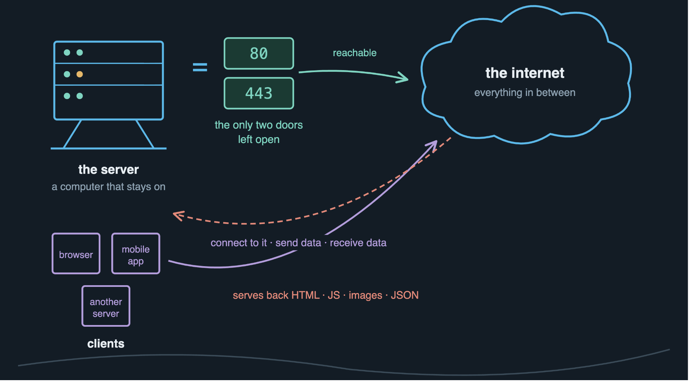
A machine has one IP address but runs many services. Ports multiplex: the IP gets you to the machine, the port gets you to the right process on it. Typing https:// silently appends :443; http:// appends :80.
| Port | Protocol | Role in the setup we're about to trace |
|---|---|---|
22 | SSH | Logging into the machine to administer it |
80 | HTTP | Plaintext — here it exists only to redirect to 443 |
443 | HTTPS | Encrypted. The real front door |
3000 3001 | app ports | Where the apps bind — never exposed publicly |
I want you to get a holistic view — to actually see the components physically, how they work behind the scenes. So let's go through this whole flow. I have a backend server which is deployed in AWS, so let's take that as an example.
Here is the entire path first, then we take it apart hop by hop.
Five hops, one requestThe return path is dashed because it retraces the same route in reverse. Note the dashed red line on the right: port 3001 is not reachable from outside — the only way to the app is through Nginx.
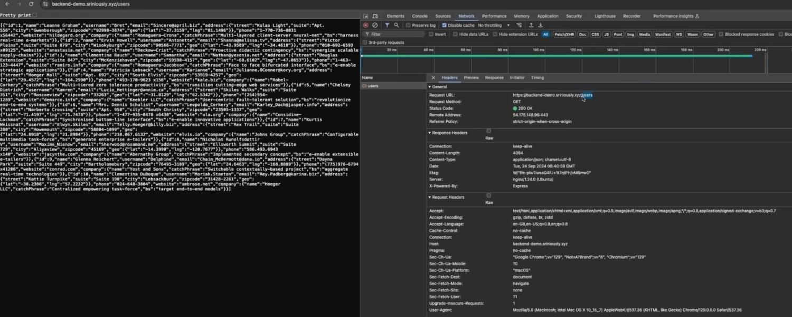
Remote Address: 54.175.148.96:443 means DNS has already resolved — the browser is telling you exactly which machine and port it reached.turning a name into an address
The first thing that you can see is the domain name. So the first thing that comes to mind is, we should take a look at our DNS server.
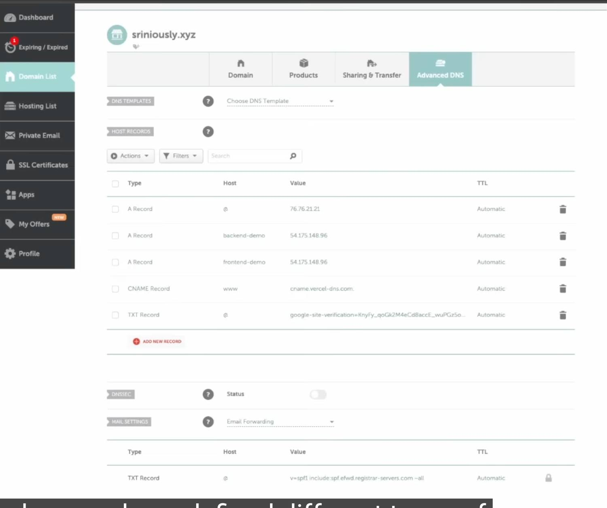
| Type | Host | Value | Meaning |
|---|---|---|---|
| A | @ | 76.76.21.21 | @ is the root domain itself |
| A | backend-demo | 54.175.148.96 | The record we follow. Points at the EC2 box |
| A | frontend-demo | 54.175.148.96 | The same IP. Two names, one machine |
| CNAME | www | cname.vercel-dns.com | Alias to another name, not an address |
| TXT | @ | google-site-verification=… | Ownership proof. No routing role |
| TXT | @ | v=spf1 include:spf.efwd… | SPF — who may send mail as this domain |
To oversimplify it, DNS has different types of records. You can use A records to point to a particular IP, and you can use CNAME records to point to a particular domain name or subdomain.
The difference that mattersAn A record ends the chase. A CNAME hands you another name to chase, which is why it's used when you don't control or can't predict the final address.
Where a lookup actually goesMost lookups never leave your machine, because something already has the answer cached. TTL is what controls how long each of these layers may hold on to it.
Security note · DNS is the first hop
Because DNS resolves before TLS is negotiated, an attacker who controls the answer controls where your traffic goes. Hijacking changes the record at the registrar; cache poisoning feeds a resolver a forged answer. DNSSEC signs responses so tampering is detectable — and the panel in the screenshot shows it toggled off.
where that IP address lives
This IP address is of an EC2 instance which is in AWS. If you see here, this is the public IP address that we just saw in our DNS config.
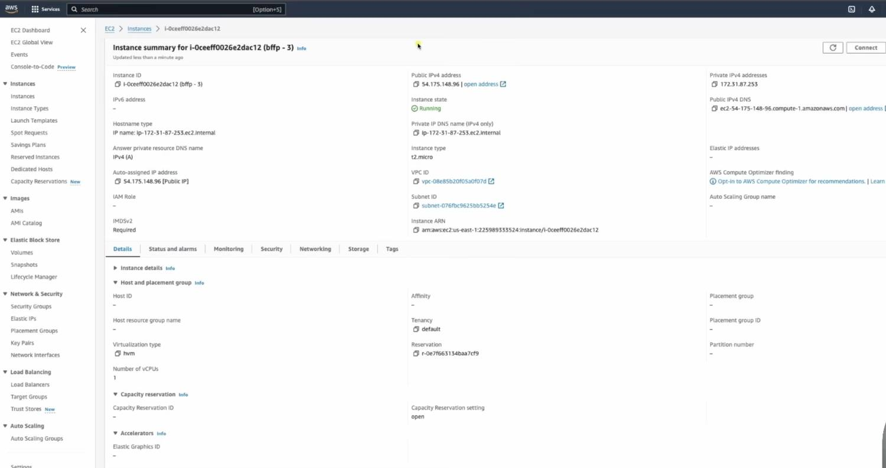
| Field | Value | Meaning |
|---|---|---|
| Instance ID | i-0ceeff0026e2dac12 | AWS's unique name for this VM |
| Public IPv4 | 54.175.148.96 | What DNS points to. How the world reaches it |
| Private IPv4 | 172.31.87.253 | Its address inside AWS's network only |
| Instance type | t2.micro | 1 vCPU, 1 GB RAM — the free-tier size |
| IMDSv2 | Required | A real hardening setting — see below |
Three tiers of reachabilityEach ring is narrower than the one outside it. The innermost — loopback — is the one Nginx uses to hand a request to the app, which is why the app never needs a publicly open port.
Security note · IMDSv2
EC2 instances can query 169.254.169.254 for their own metadata, including temporary IAM credentials. Under IMDSv1 a plain GET sufficed, making it a devastating SSRF target — trick a server into fetching that URL and you walk away with its cloud credentials. That was the mechanism in the 2019 Capital One breach. IMDSv2 requires a session token obtained by PUT first, which a naive SSRF can't produce.
before it reaches the computer
Before it reaches our server, or the particular computer, it goes through a firewall which is the AWS native firewall. The firewall has to allow some kind of request to go through.
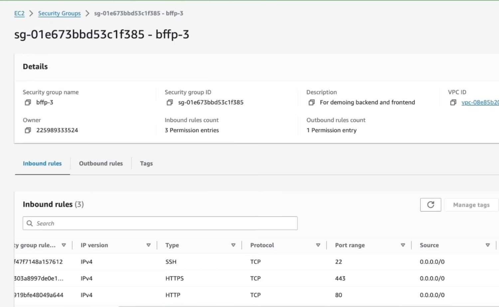
| Type | Protocol | Port | Source |
|---|---|---|---|
| SSH | TCP | 22 | 0.0.0.0/0 |
| HTTPS | TCP | 443 | 0.0.0.0/0 |
| HTTP | TCP | 80 | 0.0.0.0/0 |
0.0.0.0/0 is CIDR notation for every IPv4 address in existence. Source: anywhere.
If we don't allow these two ports — like 443 for allowing HTTPS traffic or 80 to allow HTTP traffic — if you don't allow it, AWS will block it right there and our request won't be able to reach our server.
Default deny, drawnYou enumerate what's permitted; everything else is dropped upstream of the machine. Note port 3001 in red — the app's own port is not reachable from outside, by design.
Why 3001 is deliberately absent
The Node app listens on 3001, but nobody outside can reach it. The only path in is 80/443 → Nginx → loopback → 3001, and loopback traffic never leaves the machine. One narrow front door; everything else internal.
Security notes · these specific rules
SSH open to 0.0.0.0/0 is the weak point. Open port 22 to the world invites constant automated brute-force. Better: restrict the source range, use a bastion, or drop port 22 entirely in favour of AWS Systems Manager Session Manager.
Security groups are stateful. Allow a connection inbound and its response is automatically permitted back out. Network ACLs, the other AWS firewall layer, are stateless and need rules in both directions.
the reverse proxy
We are using something called a reverse proxy, which basically means it is a server which sits in front of other servers, so that we can manage different types of redirects or configs from a centralized space instead of changing the configs in every single server.
What the proxy buys youThe blocking constraint on the left is physical: only one process can bind to port 443. Everything else is convenience, but that one is a hard limit.
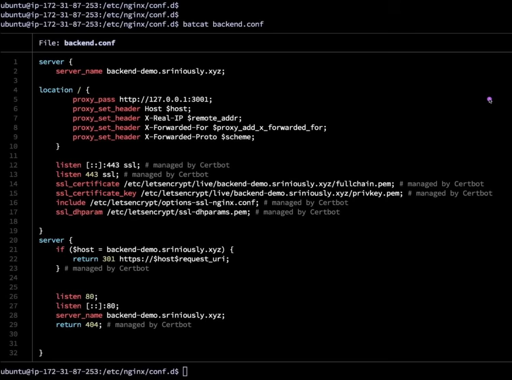
# managed by Certbot comments mark lines written automatically by Let's Encrypt tooling.Line by line
server_name backend-demo.sriniously.xyz; — how one machine serves two subdomains. Nginx reads the Host header and picks the matching block. This is the answer to why DNS pointed both names at one IP.
proxy_pass http://127.0.0.1:3001; — forward to the app on this same machine, over loopback.
proxy_set_header X-Real-IP $remote_addr; — without this the app would think every request came from 127.0.0.1, because that is literally who is calling it.
listen 443 ssl; and the ssl_certificate lines — Nginx holds the certificate, decrypts inbound TLS, forwards plaintext internally. The app never touches a certificate.
return 301 https://$host$request_uri; — the second block's entire job. Anything on port 80 is redirected to HTTPS.
The part that confused me initially was why Nginx forwards the request to
localhost:3001. It simply means the backend is running on the same EC2 machine, and Nginx acts like a receptionist that forwards requests to the correct application.
The receptionistBoth subdomains resolve to the same IP and arrive on the same port. The Host header is the only thing distinguishing them, and matching it against server_name is the entire routing decision.
Security note · forwarded headers
X-Forwarded-For is trivially spoofable if an attacker can reach the app directly and the app trusts the header blindly. It is only safe to trust when traffic must pass through the proxy — which is exactly why port 3001 is closed at the firewall. The two controls depend on each other.
the final hop
If we take a look at our processes, let's do
pm2 list. We can see here that we have two processes running — one for frontend and another for backend. And this is a Node server. So this is the final hop.
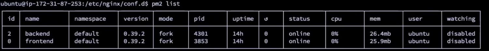
backend (pid 4301) on :3001, frontend (pid 3853) on :3000. The ↺ column is the restart counter — zero means nothing has crashed. status: online is what you want.Running node server.js in a terminal fails four ways: it dies when the SSH session closes, it doesn't return after a crash, it doesn't start after a reboot, and there's no log management. A process manager solves all four. Alternatives are systemd units, Docker with a restart policy, or Kubernetes.
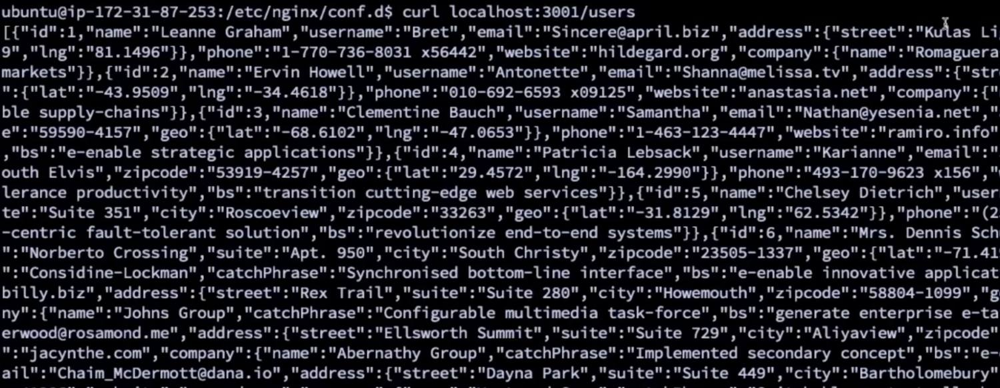
The layering, made visibleStrip away DNS, the firewall and the proxy and the app still answers — you just have to be standing on the machine to ask it.
So if we were to summarize: our request starts here in the browser, it goes to our DNS server, then that goes to our AWS servers, and it goes through a firewall, and that reaches our AWS instance. And that request then reaches Nginx, and that finally forwards that request to our localhost 3001, our final server.
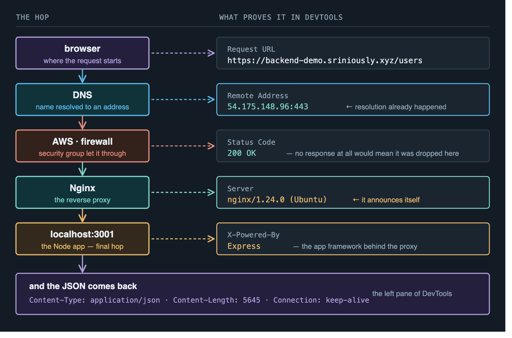
Server header, and localhost:3001 at the destination. The whole journey is recoverable from what the browser hands you.| Header | Value | What it tells you |
|---|---|---|
| Remote Address | 54.175.148.96:443 | DNS already resolved; this is the machine and port |
| Status Code | 200 OK | The request succeeded |
| Content-Type | application/json; charset=utf-8 | How the browser knows to parse it as JSON |
| ETag | W/"ffe-…" | Cache validator — lets the browser ask "changed since?" |
| Connection | keep-alive | Reuse the TCP connection for further requests |
| Server | nginx/1.24.0 (Ubuntu) | The proxy announcing itself |
| X-Powered-By | Express | The app framework announcing itself |
Security note · information disclosure
Those last two rows are findings. Server: nginx/1.24.0 (Ubuntu) and X-Powered-By: Express tell an attacker exactly what software and version you run, making CVE lookup trivial. Suppress both — server_tokens off; in Nginx, app.disable('x-powered-by') in Express. Also absent: no Strict-Transport-Security, no Content-Security-Policy, no X-Frame-Options.
Imagine you're scrolling through your Instagram feed and you come across your friend's post. As usual you like them, you click on the like button, and on the other side your friend gets a notification that you liked their post. So between you clicking on the like button and your friend getting the notification — what exactly happened?
Seven steps, five of which only a server can doIdentify the caller, authorize the action, persist the fact, look up a different user's data, and trigger something on a device you have no access to. Your phone can do none of these on its own.
If you try to condense down and strip it down — the responsibility and the use of backend to a single word — it will be this: data. The need to fetch data, the need to receive data, and the need to persist data somewhere.
If you look at your app, it is designed, it is customized according to your needs and your profile and all the people you follow. Similarly that is the case for your friend — they only receive the notification that is intended for them. But a server has to have all kinds of information, all kinds of state. So it has to be centralized.
Slices versus the wholeClients render personalised views; the server owns the truth and decides who sees which slice. That decision is authorization — and it's the reason "just do it on the frontend" collapses.
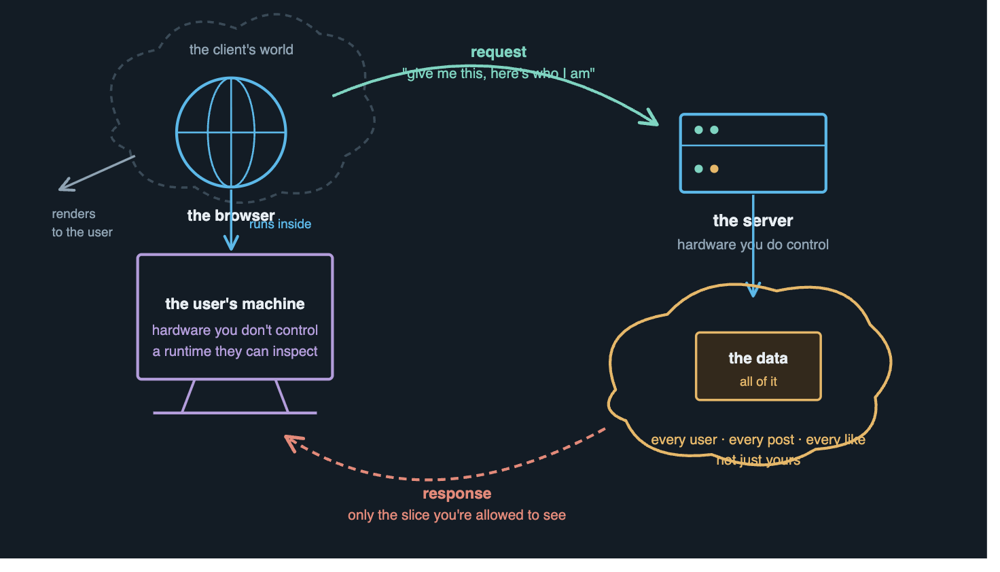
In order to understand why we can't use all those functionalities in the frontend, we have to see how frontends actually work behind the scenes. This is a Next.js application that I have deployed in the same AWS EC2 instance.
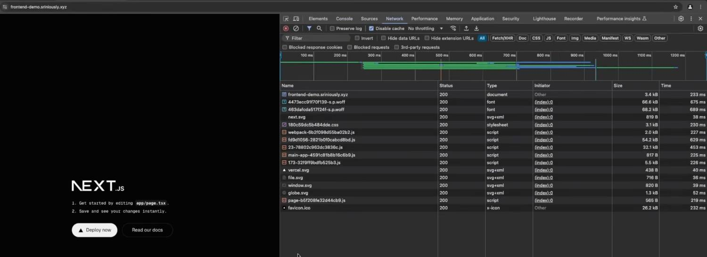
The browser fetches the HTML file, and all the resources — for example all these JavaScript and all the images, the fonts and the CSS files — all of those different things are fetched in different requests after we have our primary HTML file.
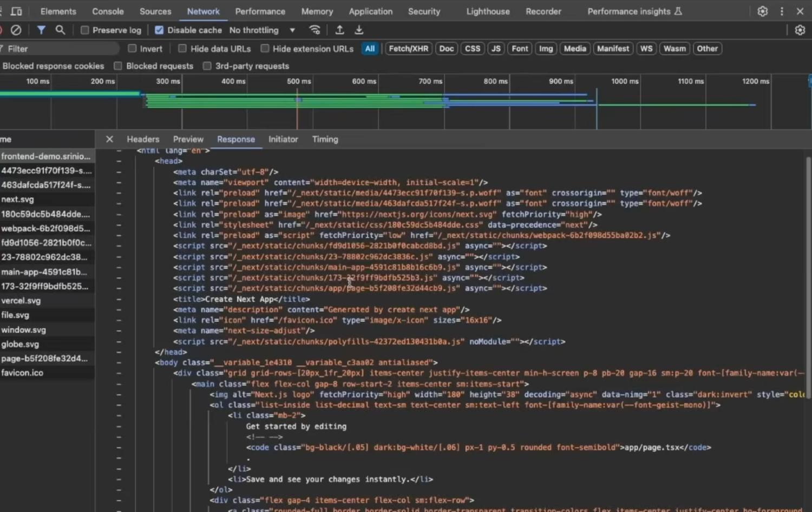
Paint, then hydrateCSS arriving makes the page look correct. JavaScript executing makes it work. The window between them is why bundle size is an obsession in frontend performance.
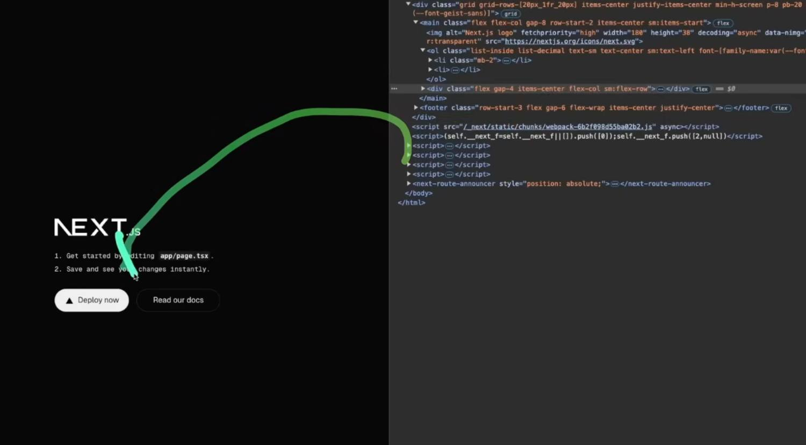
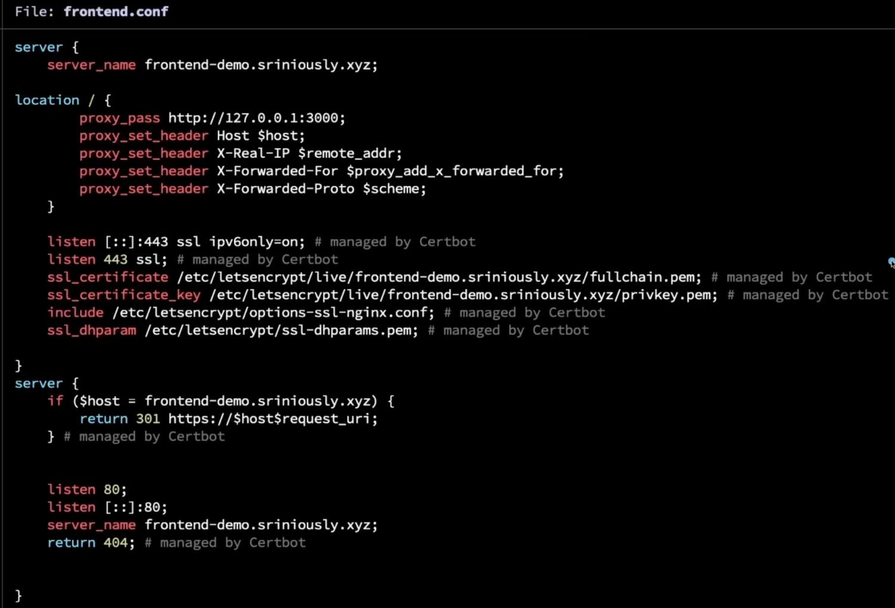
server_name differs and the proxy_pass port differs. The TLS block, the Certbot lines and the 301 redirect are the same.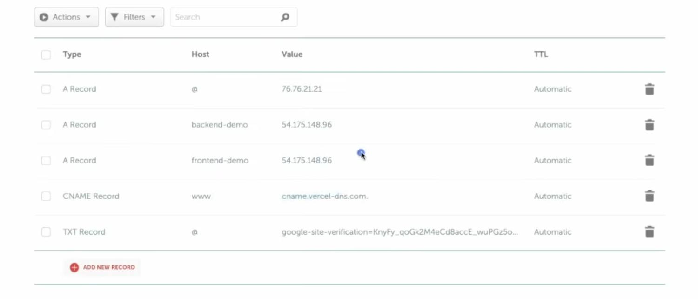
frontend-demo points at the same 54.175.148.96.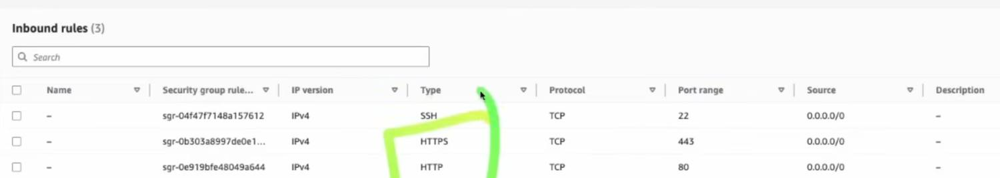
| Hop | Backend | Frontend |
|---|---|---|
| DNS A record | backend-demo → 54.175.148.96 | frontend-demo → 54.175.148.96 |
| Firewall | ports 80, 443 | same security group |
| Machine | same EC2 | same EC2 |
Nginx server_name | backend-demo.… | frontend-demo.… |
proxy_pass | 127.0.0.1:3001 | 127.0.0.1:3000 |
| Process | backend, pid 4301 | frontend, pid 3853 |
One port number
The entire difference between the frontend stack and the backend stack is one number in one config line. "Frontend" and "backend" are roles, not different species of infrastructure. A Next.js server is a server too.
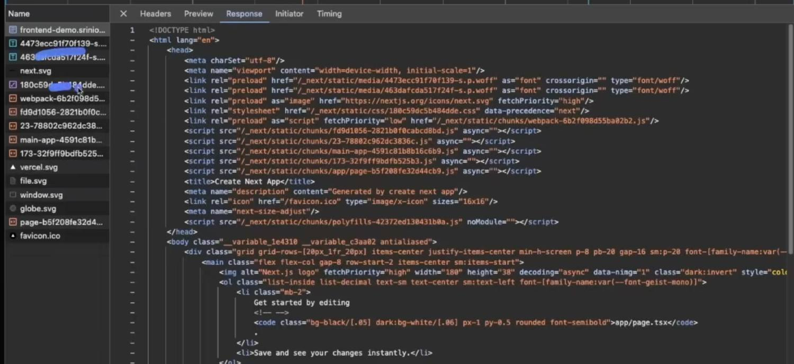
Whatever frontend logic that you have written, whatever JavaScript that you have written, is all fetched by the browser from our server and it is executed by the browser in the client's machine. So the browser is our runtime — compared to our traditional backends, where we sent a request, the server processed the request and sent us the result. It is exactly the opposite.
The asymmetry underneath all four wallsAnything running in a browser runs on hardware the user owns, in a runtime they can inspect. Secrets aren't secret. Logic isn't trusted. Client-side validation is a suggestion.
Browser runtimes are often sandboxed environments, which means they are isolated from our operating systems, the processes, and the file system. Everything is an isolated environment, which means the code can only access a limited amount of resources.
What the sandbox permits and forbidsEvery page you visit executes untrusted code from a stranger. The sandbox is what makes that survivable — and it forbids nearly everything a backend needs.
Essentially what a browser is doing is fetching code from a remote server and executing it in the user's browser. If it's not careful enough or isolated enough, the remote code can easily access data or files from the user's computer. Imagine you go to a website and you have no idea what the code of that website is — if browsers did not isolate environments, that code can easily get access to your file system, copy all your files, your sensitive details, and send it to their servers.
You can imagine CORS as a policy — a security policy of browsers — which restricts JavaScript code to call external APIs which are not the same as the current domain.
Same-Origin PolicyNote the third row: your own backend on a sibling subdomain is a different origin. This is why real apps have to configure CORS deliberately rather than it just working.
The preflight exchangeFor anything beyond a "simple" request the browser asks permission before sending the real one. The server's headers are the answer.
Three things people get wrong about CORS
It is enforced by the browser, not the server. curl ignores it entirely. CORS protects users, not APIs — it is not an access control mechanism and must never be treated as one.
It often does not stop the request being sent — it stops the response being read by the script. Side effects can still occur, which is precisely why CSRF tokens exist as a separate control.
Access-Control-Allow-Origin: * combined with credentials is invalid and browsers reject it. Reflecting the Origin header back without validating it is a common real-world vulnerability.
These drivers are written to work in environments that can handle socket connections, handle binary data, and maintain persistent connections. Things that browsers cannot do.
Database drivers speak binary wire protocols over raw TCP sockets, and browsers cannot open raw TCP. That alone settles it — but the connection pooling argument is the part most people haven't heard.
Backend servers maintain a list of connections — often called a connection pool — to our database server, so that it does not have to create and destroy connections again and again. Because backend servers receive thousands and thousands of requests in seconds, and if they do the connecting and destroying logic with each request, the database server is going to get overwhelmed.
Pooling, and the thing underneath itThe performance argument is real, but the security one is fatal: direct browser-to-database means handing out database credentials to everyone who loads the page.
Frontend applications are everywhere. It could be a smartphone, it could be a desktop, it could be a laptop — and any kind of environment we can imagine, even a computer which has 256 MB of RAM and a single-core processor. The user might not have enough computing power to perform some heavy business logic, and things will start to lag and sometimes break because of the load.
Known hardware versus unknown hardwareCentralising heavy work means you only have to make one machine fast, and you can make it faster whenever you want.
Four independent walls, one conclusionAny one of these would be enough on its own. Together they mean the question isn't really "why not" — it's that there was never a path in the first place.